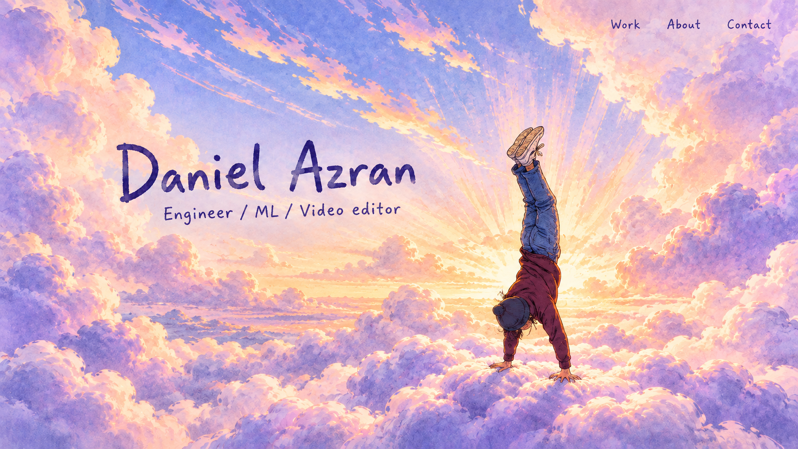
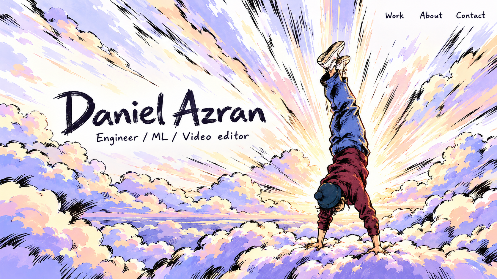
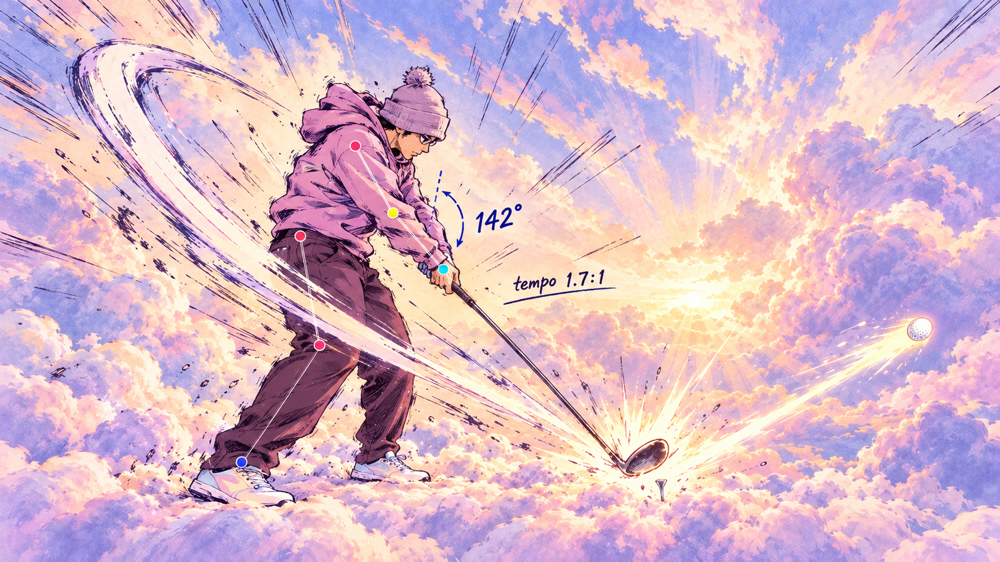
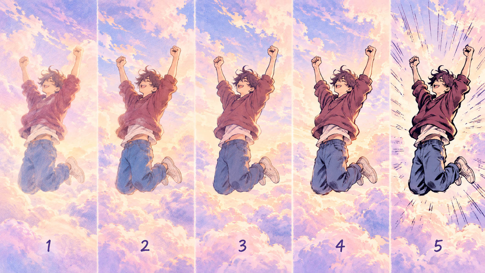
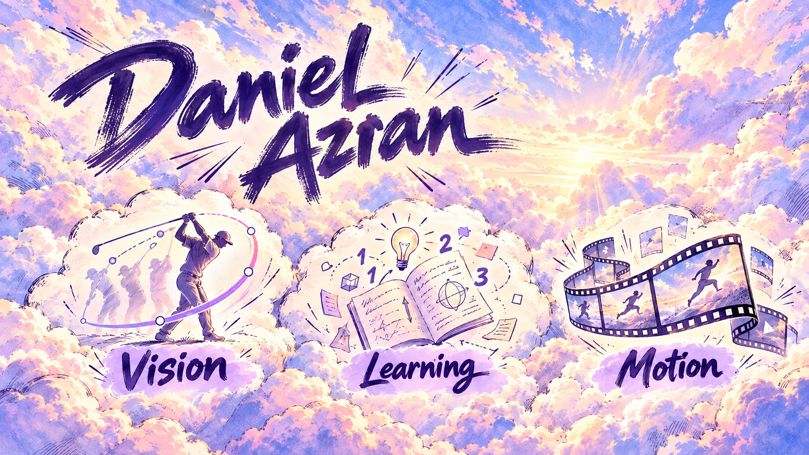
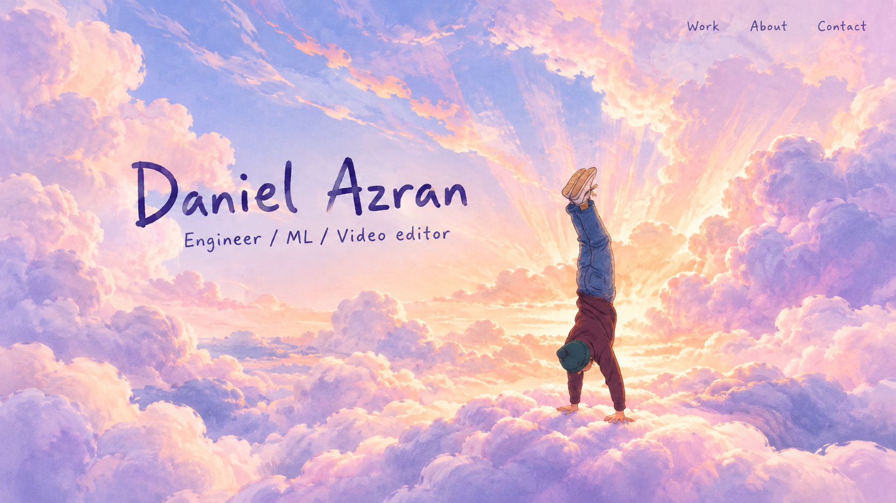
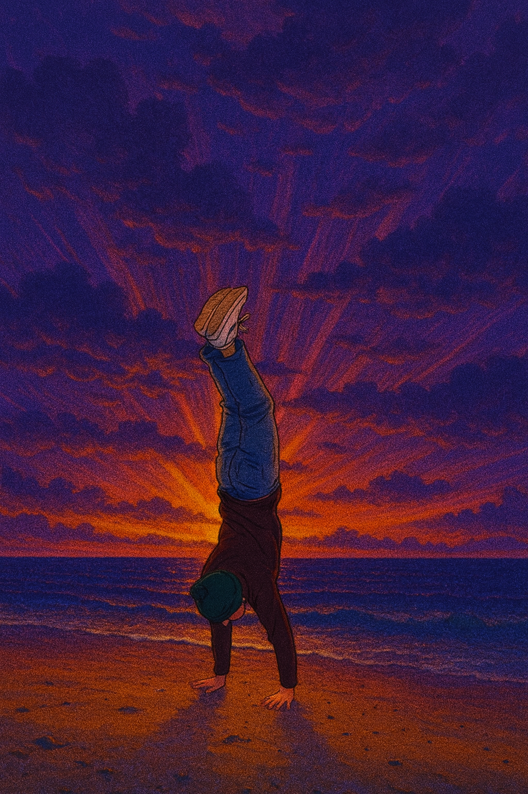
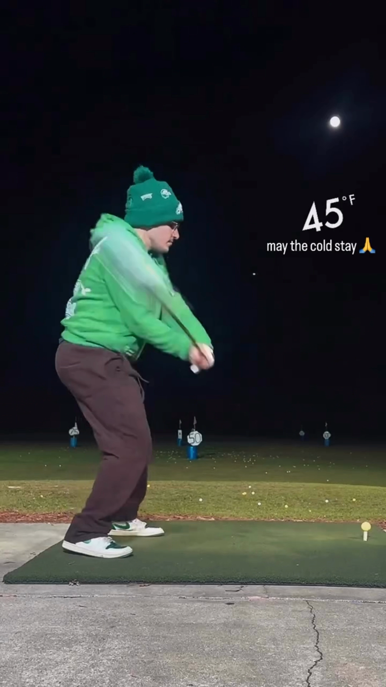

Style blend: cloud world × anime key-frame ink
Each image mixes the dreamy pastel clouds (Codex mockup 02) with the hand-inked impact-frame linework from the Oikawa serve, at a different ink strength. Click any image to see it full size. Tell me a number, or say "between 01 and 02".
Hero

01 · soft ink Indigo lines, light hatching, emphasis lines as coloured light. 
02 · strong ink Bold black brush and heavy hatching, closest to the Oikawa frame.
Golf swing

03 · impact frame Dramatic key frame with analysis marks scribbled on. 04 · soft sketch Coloured pencil and watercolour, calmer.
Calibration

05 · ink ladder 1 → 5 Same drawing from very soft to very sharp. Pick a number. 
06 · full homepage Cloud UI with medium-strength ink.
References

Cloud dream Codex mockup 02 Oikawa serve Line-work reference (local only, not committed) 
Handstand Your original 
Golf at impact Frame 34 of your clip